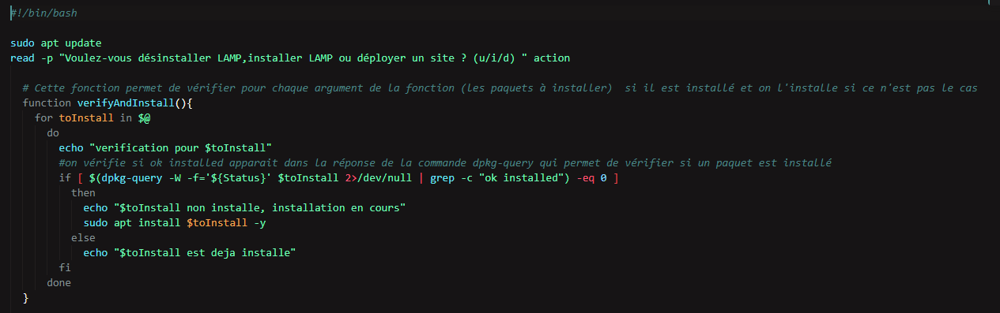
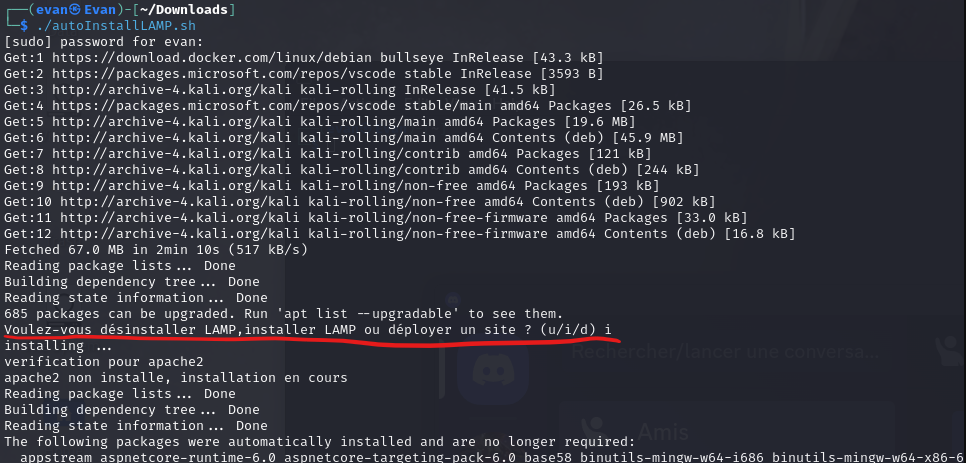

Description :
Ce projet est un travail réalisé dans le cadre de la ressource "Installation de services complexes". Il consiste à créer un script shell permettant d'installer et configurer automatiquement les services de la suite LAMP : PHP, MySQL, Apache2 et PHPmyadmin
Composantes essentielles :
CE 1.01 | En respectant les besoins décrits par le client | Niveau nécessaire estimé : Expertise
Les besoins du client étaient : "sera le script, commenté, contenant toutes les commandes permettant l'installation. Une fois terminé le script sera testé sur une machine Linux."

Sur l'image ci-dessus, on peut y voir différents commentaires du code permettant une bonne compréhension du code ainsi que les commandes nécessaires pour l'installation. Le script a bien été testé sur une machine Linux pour s'assurer que cela fonctionne bien pour le test du client.
CE 1.04 | En veillant à la qualité du code et à sa doccumentation | Niveau nécessaire estimé : Expertise
Une bonne qualité de code est essentielle au bon fonctionnement d'un programme optimisé et compréhensible. Quant à la doccumentation, ceci est extrêmement important pour une bonne compréhension du code en plus de faire partie des besoins du client dans notre cas.
Comme vous pouvez le voir sur l'images précédente, le code a bien été commenté conformément aux besoins client et aux besoins de compréhension. Quant à la qualité du code, pour chaque installation on vérifie si le paquet n'est pas déjà installé pour éviter de perdre du temps et des ressources, la duplication de code à été évitée au maximum pour économiser plus de ressources.
CE 3.03 | En offrant une qualité de service optimale | Niveau nécessaire estimé : Maitrise

Comme vous pouvez le voir, le script est très simple d'utilisation et ne nécessite aucune connaissance particulière pour être utilisé. Il suffit de lancer le script et de suivre les instructions. Comme dit précédemment le code est aussi optimisé pour perdre le moins de temps possible. Tout cela permet une qualité optimale du script.
Apprentissages critiques :
AC 33.01 | Créer des processus de traitement automatisés | Niveau nécessaire estimé : Maitrise
Le besoin principal du client était d'avoir un script permettant d'installer automatiquement les services de la suite LAMP. Il était donc important de savoir créer des processus de traitement automatisés pour répondre à ce besoin.